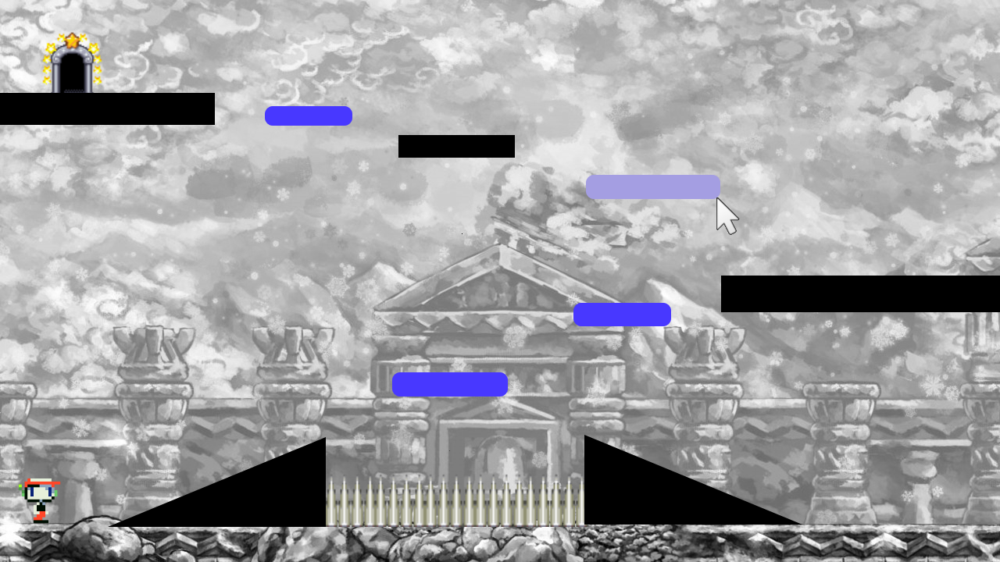
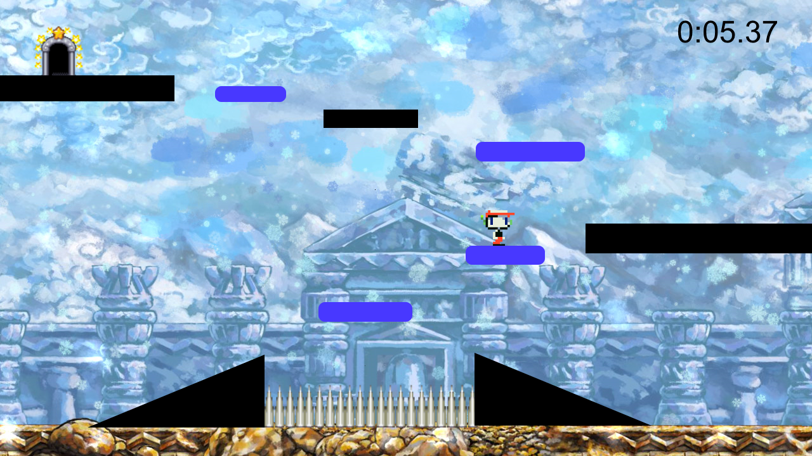

Drag and Jump
High Concept
A 2D platformer where the player makes (some of) the platforms!
Genre
Puzzle-Platformer
Story
Like most platformers, the story will be fairly simple. The player's goal is to reach the exit gate at the top of each level as fast as possible.
Esthetics
Graphics style - Very simple, with basic shapes and pixel art akin to Bit.Trip Runner.
Sound - For the building phase, ambient 8-bit (think FEZ OST), with a faster paced techno version for the platforming phase.
Gameplay
Mechanics
Each level will take up the entire canvas screen, meaning the 'camera' will remain static. Levels will consist of a few platforms and formations, as well as pre-set starting locations for the player and level gate. Before the player begins the level, they have the ability to create a limited amount of platforms to aid them in platforming.
Control
Drag (Building) Phase
The player can create rectangular platforms by clicking and dragging from the rectangle's origin point to its endpoint, similar to highlighting areas on the desktop of most OSes. The amount of platforms that can be drawn will be limited based on the platforms size. Drawn platforms can be deleted by clicking on them and pressing the delete key.
Jump (Platforming) Phase
Controls during platforming will be similar to most other web-based platformers. WASD for player movement, with the 'SPACE' key used for jumping.
Teaching the game
For the initial prototypes, an instructions screen detailing the game mechanics and controls will be accessible from the main menu. In future versions, an optional tutorial level will be implemented to allow the player to learn by doing, instead of reading.
Player learning
The main challenge of the game is trying to figure out the limitations of the player-character's platforming abilities, and drawing platforms in appropriate places in order to reach the exit gate as quickly and as efficiently as possible, as the player will be graded based on their completion time and the amount of platforms drawn. Over-reliance on drawing platforms as well as longer finish times will adversely affect the player's score.
Screenshots
Drag Phase
Jump Phase
Note: These mockups were made up of assets taken from various sources, and are not indicative of the final game's presentation
Issues With Current Version
Currently, player vs platform collision is a little wonky, and it's very easy to have the player jump up from the side of a platform and be immediately carried to the top. Another weakness this current version has is that it's a little bare bones as far as art goes. While I did originally plan to have a simpler art style, had I had more time I would have focused on making a more eyecatching background, animation for the player, and perhaps a tileset for platforms. Some missing gameplay elements that I also did not have time for was the implementation of the timer during the Jump Phase, so player performance is not being graded. ANother possible extension to my project is adding in stage hazards (such as the spikes shown in the mockups) or moving platforms with different shapes. There is only so much you can do with static, rectangular platforms, so adding in some different obstacles for the player would provide some much needed variety.
About the developer
I'm Andre Belanger, a 4th-year Game Design and Development major, and my skill set leans towards programming, specifically with User Interface Design. While I have had JavaScript experience with a previous internship and other courses, this will be the first game project I have had involving JavaScript.